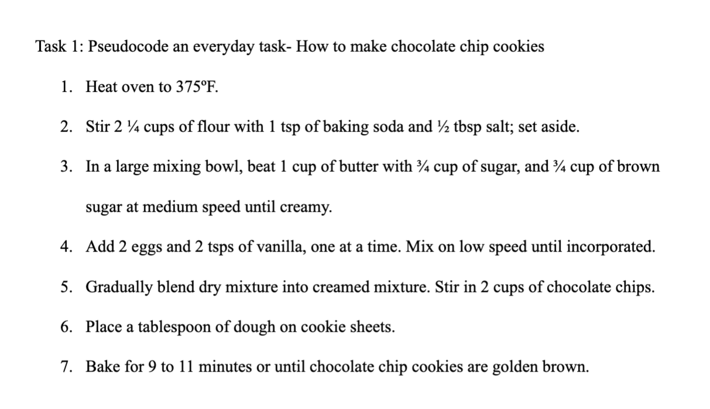
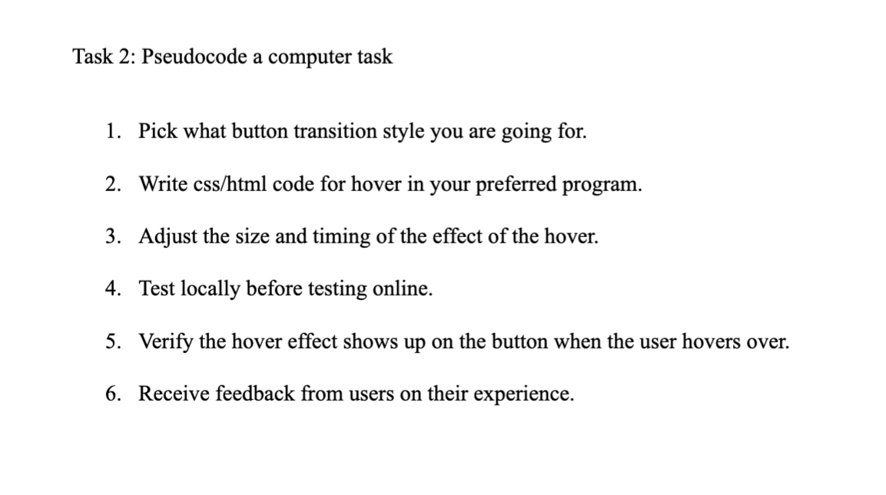
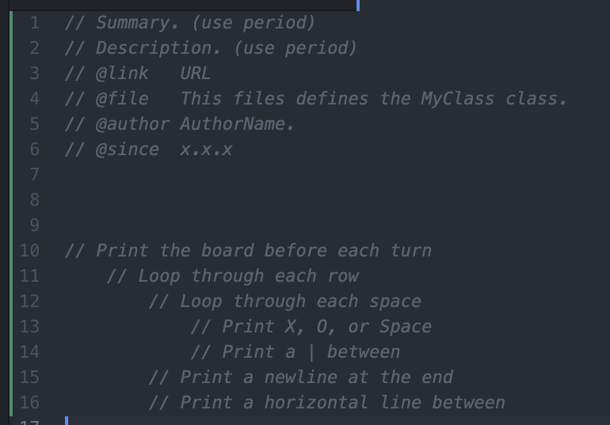

Challenge
The challenge of this lab is to get in the habit of thinking in terms of pseudocoding before jumping into coding.
Problems
We didn't really have any problems this lab.
Results
Look at the tasks below to see our pseudocode. Here are some screenshots of the pseudocode we created:
  